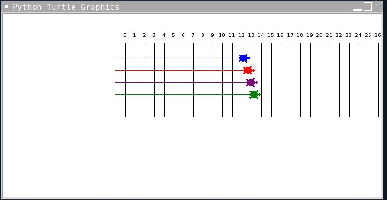

hub
portfolio
about me :)
welcome to my portfolio! 🍜
Turtle.Kar.Racers. 🐢

this is a game where you are asked to pick one of the many racers to bet on. once you do you are greated with a text asking how much you want to bet on that racer. my partner and i used a randomizer code to set a random speed for each turtle, so that the race is random and fair. after the match the scorebord will show the average speed of the turtles, and will announce whether you won or lost. along with that it will also state how much money you either made or lost. 🐢
Harry's Cookie Clicker 🍜
A fun competition with yourself. With Harry's Cookie Clicker you will be clickng on the cookie by adding additional cookies, you will be able to buy tools that will allow you to become more advanced and gain more cookies. The limits are your imagination with the all new Harry's Cookie Clicker! 🐢
Build A Bear! 🐢
A picture can say a thousand words. When it comes to you loved ones you need lots of thoughtful words. This card can be costumized to print the name of the loved one, the message, and a choice of either pills or bandaid. The bear runs around at the beginning and displayes the final message in a kid friendly way. 🐢
Kitty Builder! 🐢
The limit is your imagination. Build A Kitty is a program ran on scratch that allows the user to pick and choose the features they want for their digital kitty. They can change the head of their cat, the tail, the body, and extra accessories. This is complemented with a relaxing muisic which can be controled by the user to either play or not play. Along side that there is a botton which makes this digital experience real by making the little kitty meow like a real cat. This is Build A Kitty! 🐢
Use data files to create graphs.
Using netlogo do remix of illusions.
Interactive Fiction Rags to Riches.